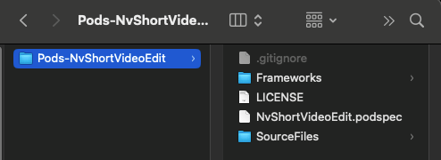

⚠️ Note: 需要在真机上运行，模拟器暂不支持
private func setWebConfig() {
let moduleManager = NvModuleManager.sharedInstance()
let request = moduleManager.netDelegate!
request.dependencyDelegate = dependencyDelegate
request.setHost("https://mall.meishesdk.com/api/shortvideo/v1")
request.assetAutoCutUrl = "https://creative.meishesdk.com/api/app/aivideo/asset/all/1"
if isCurrentLanguageNoChinese() {
request.isAbroad = 1
}
_ = moduleManager.prepareDownloadFolders()
networkState()
}
- (void)downloadPrefabricatedMaterialCompletion:(void (^_Nullable)(BOOL isFinish))completionHandler;
startCaptureWithPresentViewController startDualCaptureWithPresentViewController startEditWithPresentViewController中的block参数中，将原来的void改为了BOOL值，使用时请注意，如果你的block传的是nil，升级后不会有变化。如果你传的不是空请注意下面的block参数。- (void)startCaptureWithPresentViewController:(UIViewController *)viewController
config:(NvVideoConfig * _Nullable)config
music:(NvCaptionMusicInfo * _Nullable)music
with:(void(^)(BOOL isFinish))complatetionHandler;
- (void)startDualCaptureWithPresentViewController:(UIViewController *)viewController
config:(NvVideoConfig * _Nullable)config
with:(void(^)(BOOL isFinish))complatetionHandler;
- (void)startEditWithPresentViewController:(UIViewController *)viewController
config:(NvVideoConfig * _Nullable)config
with:(void(^)(BOOL isFinish))complatetionHandler;
详见：美摄sdk产品概述
短视频模块下载解压后，以CocoaPods本地私有库的方式使用，解压后文件目录如下：

创建 Podfile 文件
进入项目所在路径，输入以下命令行之后项目路径下会出现一个 Podfile 文件。
pod init
编辑 Podfile 文件, 添加短视频模块依赖
建议使用参数: use_frameworks!
platform :ios, '12.0'
source 'https://github.com/CocoaPods/Specs.git'
use_frameworks!
target 'App' do
# NvShortVideoCore
pod 'NvShortVideoEdit', :path => '../Pods-NvShortVideoEdit'
end
安装依赖
pod install
copy demo文件
如果你是flutter用户或者reactnative用户这一步你不用关心。如果你是原生工程接入你需要copy demo中的两个文件Config.swift、NvHttpRequestDelegate.swift到你的工程中，Config.swift文件是为了配置网络接口url的，你只需要把host改为你自己服务器就行了，NvHttpRequestDelegate是为了加载第三方库。
之后在你的代码中对URL进行配置,在当前控制器中调用setWebConfig(),最后就是点击按钮的时候进入shortvideo的拍摄和编辑页面了。 请参考下面代码。
...
var videoConfig: NvVideoConfig?
let dependencyDelegate = NvHttpRequestDelegate()
override func viewDidLoad() {
super.viewDidLoad()
// Do any additional setup after loading the view.
setupModuleManager()
//web config
setWebConfig()
test()
}
private func setWebConfig() {
let moduleManager = NvModuleManager.sharedInstance()
// 这里如果你有自己实现HttpRequest类，那么这里你可以创建一个HttpRequest对象实例赋值给moduleManager.netDelegate，并设置好url
// Here if you have your own implementation HttpRequest class,
// so here you can create an HttpRequest object instance assigned to moduleManager.net Delegate, and set up the url
let request = moduleManager.netDelegate as! NvHttpRequest
request.dependencyDelegate = dependencyDelegate
request.assetRequestUrl = NV_ASSET_REQUEST_URL
request.assetCategoryUrl = NV_ASSET_CATEGORY_URL
request.assetMusiciansUrl = NV_ASSET_MUSICIANS_URL
request.assetFontUrl = NV_ASSET_FONT_URL
request.assetDownloadUrl = NV_ASSET_DOWNLOAD_URL
request.assetPrefabricatedUrl = NV_ASSET_PREFABRICATED_URL
request.assetAutoCutUrl = NV_ASSET_AUTOCUT_URL
request.assetTagUrl = NV_ASSET_TAG_URL
request.clientId = NV_ClientId
request.clientSecret = NV_ClientSecret
request.assemblyId = NV_AssemblyId
if isCurrentLanguageNoChinese() {
request.isAbroad = 1
}
moduleManager.prepareDownloadFolders()
networkState()
}
func isCurrentLanguageNoChinese() -> Bool {
guard let language = Locale.preferredLanguages.first else {
return false
}
return !language.hasPrefix("zh")
}
func networkState() {
let monitor = NWPathMonitor()
let queue = DispatchQueue(label: "NetworkMonitor")
monitor.pathUpdateHandler = { path in
if path.status == .satisfied {
// 网络可用
DispatchQueue.main.async {
let moduleManager = NvModuleManager.sharedInstance()
moduleManager.preloadedResource()
}
monitor.cancel()
} else {
// 网络不可用
print("Network not reachable")
}
}
monitor.start(queue: queue)
}
App 需要在 Info.plist 中添加以下权限，否则将无法使用短视频模块。
<key>NSCameraUsageDescription</key>
<string>App需要您的同意,才能访问相机</string>
<key>NSMicrophoneUsageDescription</key>
<string>App需要您的同意,才能访问麦克风</string>
<key>NSPhotoLibraryUsageDescription</key>
<string>App需要您的同意,才能访问相册</string>
<key>NSAppleMusicUsageDescription</key>
<string>App需要您的同意,才能访问音乐</string>
美摄SDK授权方法：
#import <NvStreamingSdkCore/NvsStreamingContext.h>
@interface AppDelegate ()
@end
@implementation AppDelegate
- (BOOL)application:(UIApplication *)application didFinishLaunchingWithOptions:(NSDictionary *)launchOptions {
NSString *licPath = [[NSBundle mainBundle] pathForResource:@"meicam_licence" ofType:@"lic"];
BOOL ret = [NvsStreamingContext verifySdkLicenseFile:licPath];
if (!ret) {
NSLog(@"verifySdkLicenseFile faild");
}
return YES;
}
@end
func application(_ application: UIApplication, didFinishLaunchingWithOptions launchOptions: [UIApplication.LaunchOptionsKey: Any]?) -> Bool {
// Override point for customization after application launch.
let licPath = Bundle.main.path(forResource: "meishesdk", ofType: "lic")
if NvsStreamingContext.verifySdkLicenseFile(licPath) {
print("verifySdkLicenseFile success")
} else {
print("verifySdkLicenseFile failed")
}
return true
}
在美摄官网注册用户后，创建应用，配置Bundle Idenfity，由美摄商务同事开通授权后，可在应用信息中下载授权文件。
需要将授权.lic文件添加到App工程中
SDK授权和App的Bundle Idenfity绑定。未授权时，SDK全功能不再检查授权，都可以使用，绘制的画面会带MEISHE水印。
短视频模块用到的滤镜、贴纸、音乐等文件均通过网络接口获取。需要服务端按接口文档实现相应的接口。
在App工程中配置服务器地址及公共参数。
// 参考这个方法配置网络接口
private func setWebConfig() {}
短视频模块依赖的素材包可根据需要选择。预制素材详见：短视频模块预制素材
下载预置素材,如果你调用这个接口后，shortvideo在进入的时候就不会重复调用，如果你不调用，shortvideo在进入的时候就会默认后台调用。
/*! \if ENGLISH
*
* \brief Download material
* \param completionHandler Completion callback
* \else
*
* \brief 下载素材
* 素材类型
* \param completionHandler 完成回调
* \endif
* */
- (void)downloadPrefabricatedMaterialCompletion:(void (^_Nullable)(BOOL isFinish))completionHandler;
模块主要方法定义在NvModuleManager.h文件中。
调用示例：
let moduleManager = NvModuleManager.sharedInstance()
moduleManager.downloadPrefabricatedMaterialCompletion(nil)
guard let navigationController = navigationController else { return }
moduleManager.startCapture(
withPresent: navigationController,
config: videoConfig,
music: nil
) { isFinish in
}
// 引入头文件
#import <NvShortVideoCore/NvShortVideoCore.h>
- (IBAction)sendertapCapture:(UIButton*)bt {
bt.enabled = NO;
NvVideoConfig *config = [[NvVideoConfig alloc] init];
NvModuleManager* moduleManager = [NvModuleManager sharedInstance];
[moduleManager startCaptureWithPresentViewController:self.navigationController config:config music:nil with:^{
bt.enabled = YES;
}];
}
/*! \if ENGLISH
*
* \brief Shooting entrance
* \param viewController Current viewController
* \param config Configuration item
* \param music The default is nil，If you need to shoot with music, you need to pass an audio object, and the path of the audio must be local and has been downloaded
* \param complatetionHandler
* \else
*
* \brief 拍摄入口
* \param viewController 当前控制器
* \param config 配置项
* \param music 默认是nil，如果拍摄时需要带音乐拍摄，需要传递一个音频对象，音频的路径必须是本地的，已经下载的路径
* \param complatetionHandler
* \endif
*/
- (void)startCaptureWithPresentViewController:(UIViewController *)viewController
config:(NvVideoConfig * _Nullable)config
music:(NvCaptionMusicInfo * _Nullable)music
with:(void(^)(void))complatetionHandler;
/*! \if ENGLISH
*
* \brief PIP entrance By default, the album is opened, and a material from the album is taken into the beat
* \param viewController Current viewController
* \param config Configuration item
* \param complatetionHandler
* \else
*
* \brief 合拍入口，默认打开相册，从相册取一个素材进入合拍
* \param viewController 当前控制器
* \param config 配置项
* \param complatetionHandler
* \endif
*/
- (void)startDualCaptureWithPresentViewController:(UIViewController *)viewController
config:(NvVideoConfig * _Nullable)config
with:(void(^)(void))complatetionHandler;
/*! \if ENGLISH
*
* \brief PIP entrance
* \param viewController Current viewController
* \param config Configuration item
* \param videoPath The video path to be filmed must be a local path
* \param complatetionHandler
* \else
*
* \brief 合拍入口
* \param viewController 当前控制器
* \param config 配置项
* \param videoPath 准备合拍的视频路径，必须是本地路径
* \param complatetionHandler
* \endif
*/
- (void)startDualCaptureWithPresentViewController:(UIViewController *)viewController
config:(NvVideoConfig * _Nullable)config
videoPath:(NSString *)videoPath
with:(void(^)(void))complatetionHandler;
/*! \if ENGLISH
*
* \brief Edit entrance
* \param viewController Current viewController
* \param config Configuration item
* \param complatetionHandler
* \else
*
* \brief 编辑入口
* \param viewController 当前控制器
* \param config 配置项
* \param complatetionHandler
* \endif
*/
- (void)startEditWithPresentViewController:(UIViewController *)viewController
config:(NvVideoConfig * _Nullable)config
with:(void(^)(void))complatetionHandler;
/*!
* \if ENGLISH
*
* \brief Edit complete, ready to enter publish callback
* \else
*
* \brief 编辑完成，准备进入发布回调
* \endif
*/
@protocol NvModuleManagerDelegate <NSObject>
/*!
* \if ENGLISH
*
* \brief Edit complete, jump release callback
* @param taskId Edit the event id used to exit the module
* @param coverImagePath cover
* @param hasDraft Whether there is a draft button
* @param draftInfo The title displayed on the publish page
* @param videoEditNavigationController Current nav controller
* \else
*
* \brief 编辑完成，跳转发布回调
* @param taskId 编辑事件id，用于退出模块
* @param coverImagePath 封面图
* @param hasDraft 是否有草稿按钮
* @param draftInfo 发布页显示的标题
* @param videoEditNavigationController 当前nav控制器
* \endif
* \sa exitVideoEdit:
*/
- (void)publishWithTaskId:(NSString *)taskId
coverImagePath:(NSString *)coverImagePath
hasDraft:(BOOL)hasDraft
draftInfo:(NSString *_Nullable)draftInfo
videoEditNavigationController:(UINavigationController *)videoEditNavigationController;
@end
/*! \if ENGLISH
*
* \brief Save the cover image to the album
* \param coverPath Current cover map path
* \param completionHandler
* \warning Publish page Save picture button, click after the call
* \else
*
* \brief 保存封面图到相册
* \param coverPath 当前封面图路径
* \param completionHandler
* \warning 发布页保存图片按钮，点击之后调用
* \endif
*/
- (void)saveCover:(NSString *)coverPath with:(nullable void(^)(BOOL success))completionHandler;
/*! \if ENGLISH
*
* \brief Save draft
* \param infoString The text of the currently saved publication page
* \warning Publish page Save draft button, called after clicking
* \else
*
* \brief 保存草稿
* \param infoString 当前保存的发布页文本
* \warning 发布页保存草稿按钮，点击之后调用
* \endif
*/
- (BOOL)saveCurrentDraftWithDraftInfo:(NSString *_Nullable)infoString;
/*! \if ENGLISH
*
* \brief Start exporting video
* \param configure Default is nil, no need to pass
* \warning Publish page Save video button, click after the call
* \else
*
* \brief 开始导出视频
* \param configure 默认是nil，不需要传
* \warning 发布页保存视频按钮，点击之后调用
* \endif
*/
- (BOOL)compileCurrentTimeline:(NSDictionary *_Nullable)configure;
/*! \if ENGLISH
*
* \brief sdk video export callback
* \else
*
* \brief sdk视频导出回调
* \endif
*/
@protocol NvModuleManagerCompileStateDelegate <NSObject>
/*! \if ENGLISH
*
* \brief compile video progress callback
* \param progress the current progress
* \else
*
* \brief 合成视频进度回调
* \param progress 当前的进度
* \endif
*/
- (void)didCompileFloatProgress:(float)progress;
/*! \if ENGLISH
*
* \brief The resultant video completes the callback
* \param outputPath Video output file path
* \param error error
* \else
*
* \brief 合成视频完成回调
* \param outputPath 视频输出的文件路径
* \param error 错误信息
* \endif
*/
- (void)didCompileCompleted:(NSString *_Nullable)outputPath error:(NSError *_Nullable)error;
@end
/*! \if ENGLISH
*
* \brief Save the video to the album
* \param coverPath Current video path
* \param completionHandler
* \else
*
* \brief 保存视频到相册
* \param coverPath 当前视频路径
* \param completionHandler
* \endif
*/
- (void)saveVideo:(NSString *)videoPath with:(nullable void(^)(BOOL success))completionHandler;
/*! \if ENGLISH
*
* \brief Save the cover image to the album
* \param coverPath Current cover map path
* \param completionHandler
* \warning Publish page Save picture button, click after the call
* \else
*
* \brief 保存封面图到相册
* \param coverPath 当前封面图路径
* \param completionHandler
* \warning 发布页保存图片按钮，点击之后调用
* \endif
*/
- (void)saveCover:(NSString *)coverPath with:(nullable void(^)(BOOL success))completionHandler;
/*! \if ENGLISH
*
* \brief Get a list of all currently selected materials
* \else
*
* \brief 获取当前所选所有素材列表
* \endif
*/
- (NSMutableArray *)getAVFileInfoArray;
/*! \if ENGLISH
*
* \brief Get material information
* \param path material path
* \else
*
* \brief 获取素材信息
* \param path 素材路径
* \endif
*/
- (NvsAVFileInfo*)getAVFileInfo:(NSString *)path;
视频发布页退出时调用
/*! \if ENGLISH
*
* \brief Exit the entire publisher call
* \param taskId Returned by the edit completion callback
* \warning This method will clean up the current draft and SDK-held resources, please call after completely exiting the editing and publishing process
* \else
*
* \brief 退出整个发布器调用
* \param taskId 由编辑完成回调中返回
* \warning 该方法会清理当前草稿以及sdk持有资源，请在完全退出编辑发布流程之后，调用
* \endif
*/
- (BOOL)exitVideoEdit:(NSString *)taskId;
方法定义在NvDraftModel.h中
/*! \if ENGLISH
*
* \brief Gets all drafts saved in the sandbox
* \return draft list
* \else
*
* \brief 获取沙盒中保存的所有草稿
* \return 草稿列表
* \endif
*/
+ (NSMutableArray<NvDraftModel *> *)getUserDraftFileArray;
方法定义在NvDraftModel.h中
/*! \if ENGLISH
*
* \brief Delete a draft file
* \param model draft
* \else
*
* \brief 删除某个草稿文件
* \param model draft
* \endif
*/
+ (void)deleteDraftFile:(NvDraftModel *)model;
方法定义在NvModuleManager.h中
/*! \if ENGLISH
*
* \brief Enter the editing portal through draft data recovery
* \param draft Current draft object
* \param viewController Current viewController
* \param config Configuration item
* \else
*
* \brief 通过草稿数据恢复，进入编辑入口
* \param draft 当前草稿对象
* \param viewController 当前控制器
* \param config 配置项
* \endif
*/
- (void)reeditDraft:(NvDraftModel *)draft presentViewController:(UIViewController *)viewController
config:(NvVideoConfig * _Nullable)config;
短视频模块设置类NvVideoConfig，包含功能模块设置、UI定制。详见：短视频功能模块设置、短视频UI模块设置